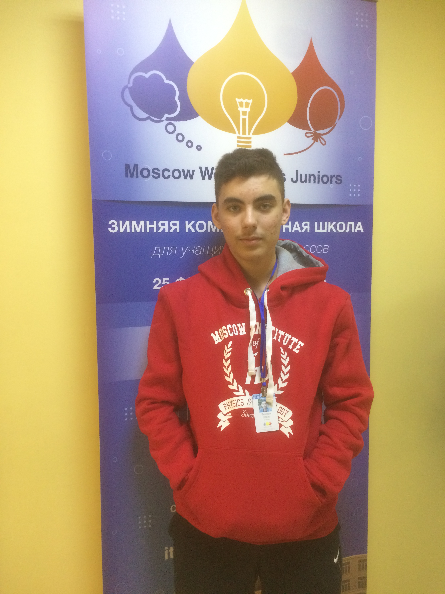
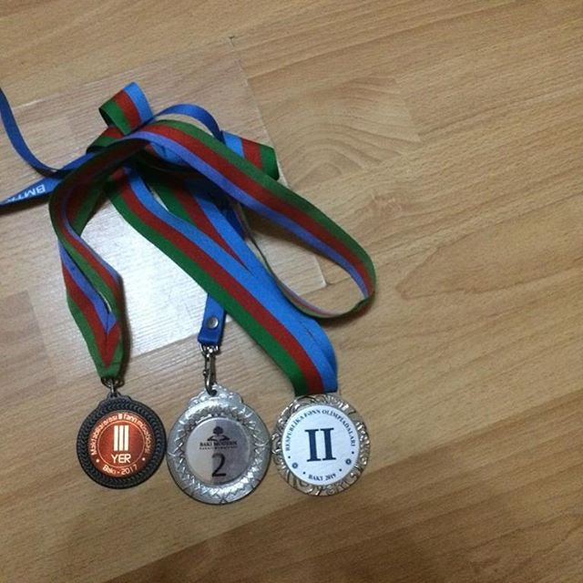

Моя автобиография
Меня зовут Иночкин Эмиль. Родился 16 июля 2004 года. Учусь в 10Б классе в
Классической гимназии №160. Я технарь, любимый урок у меня физика.
Увлекаюсь олимпиадным программированием и впоследнее время
WEB-developmentом, почему и решил создать сайт-автобиографию, к тому же
появилось много свободного времени на карантине. Также люблю музыку, практически
ничего без неё не делаю. Мечтаю поступить заграницу, почему и учу английский и
немецкий языки. Кто-то унывает из-за карантина. Я же стараюсь не тратить время
зря и занимаюсь саморазвитием (учу английский и немецкий, пытаюсь создавать
сайты, продвигаюсь в олимпиадном программировании). Но нужно знать меру всему и
нельзя только заниматься, потому что можно устать и "сломаться" так, что потом
не захочешь садиться за учёбу. Я стараюсь правильно распределять время, что,
увы, не всегда выходит. У меня была долгая борьба с ленью, но пока ты сам не
увидишь мотивацию и не поставишь цель, у тебя ничего не выйдет. Ты должен
понимать зачем ты всё это делаешь и что это тебе даст, пусть даже в долгосрочной
перспективе.
Переломные моменты в жизни
Я жил обычной жизнью школьника, учился неплохо, на 4/5; ничем особым не
занимался. К концу 6 класса моя жизнь колоссально изменилась. Нам в школе
раздали тест с логическими задачами. Я неплохо написал его, вследствие чего
меня и ещё несколько ребят со школы отправили на бесплатные курсы
программирования. Первым моим учителем был Рамин Назимович. В 7 классе в
республике проводились 2 олимпиады по программирования (логические задачи и
программирование). Весь 7-8 класс я ходил на занятия к Рамину Назимовичу, дважды
был близок к бронзе на олимпиаде по информатике. В 9 классе я стал посещать уже
не бесплатные уроки Михаила Геннадиевича и мой уровень сильно вырос.
Задумываться о поступлении я, к сожалению, стал только летом после 9 класса.
Тогда я стал более серьёзно относиться к своим отметкам и иностранным языкам.
Олимпиады и достижения
Диплом 3 степени на олимпиаде по информатике FRITLа
Бронза на Республиканской олимпиаде по информатике (логика) 7 класс
Серебро на командной олимпиаде BMTK 8 класс
Серебро на республиканской олимпиаде по информатике 9 класс
Первое место на школьной олимпиаде по информатике 10 класс
Третье место на школьной олимпиаде по физике 10 класс
Участие на IATI (International Autumn Tournament in Informatics) в Шумене, Болгария
Участие в MWJ (Зимняя комп. школа) в МФТИ
Участие (113 место из 1200+ команд) на Reply Code Challenge
